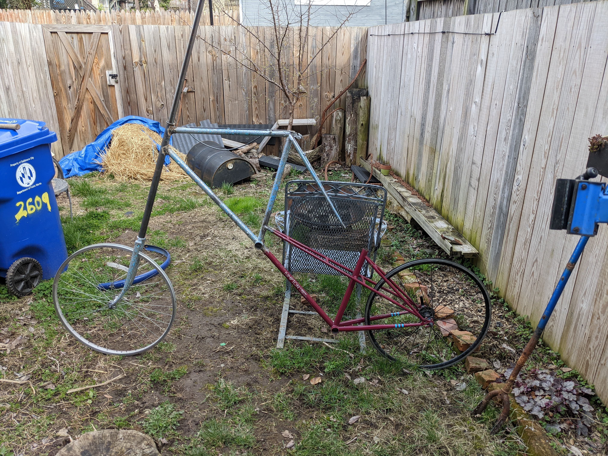
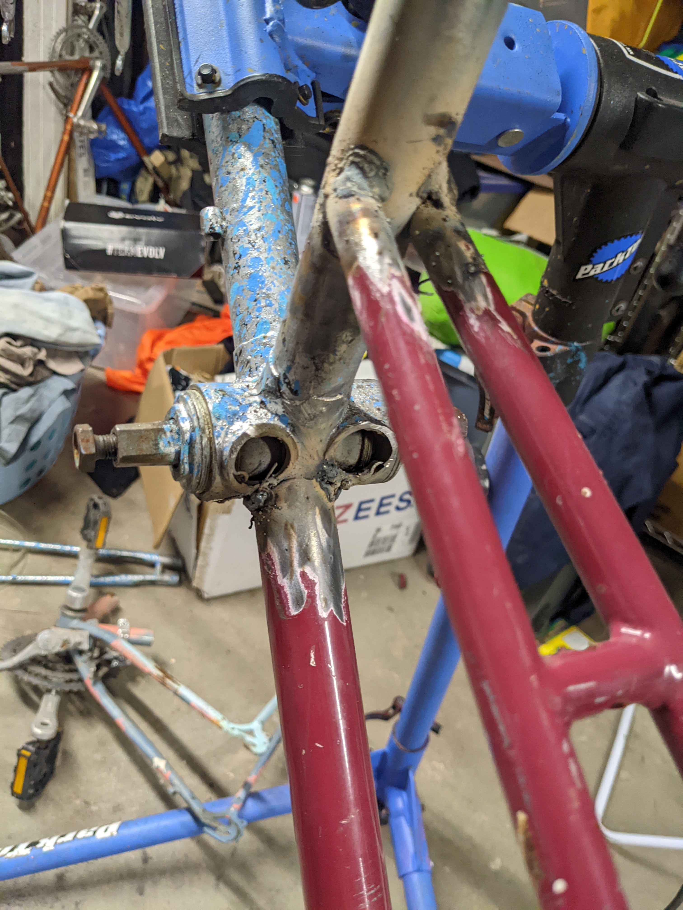
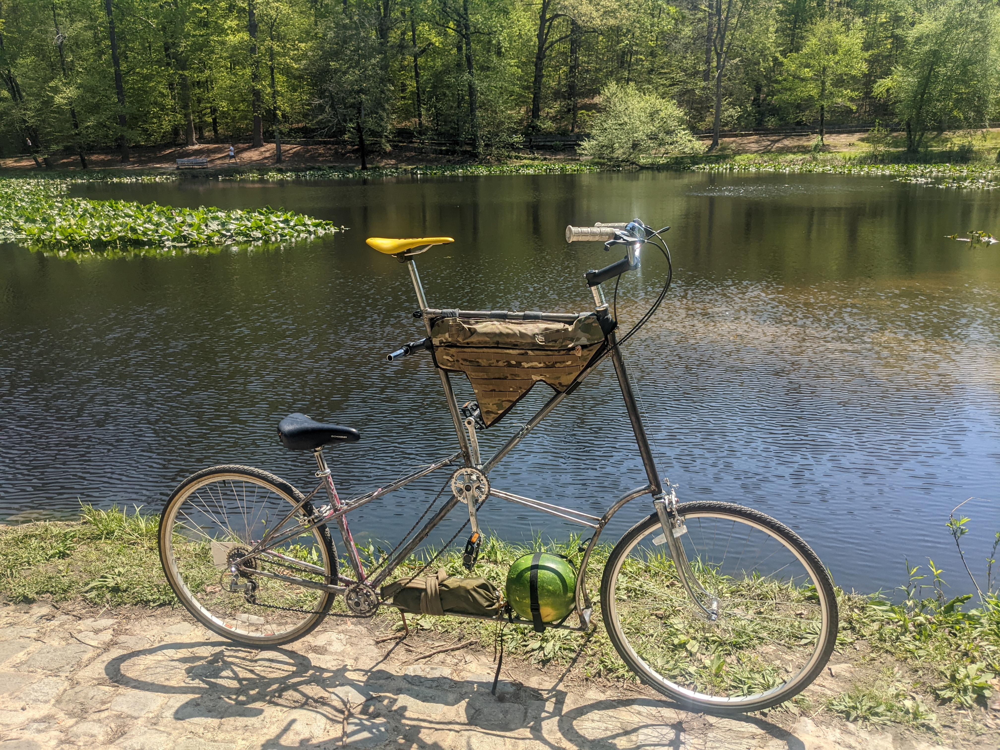
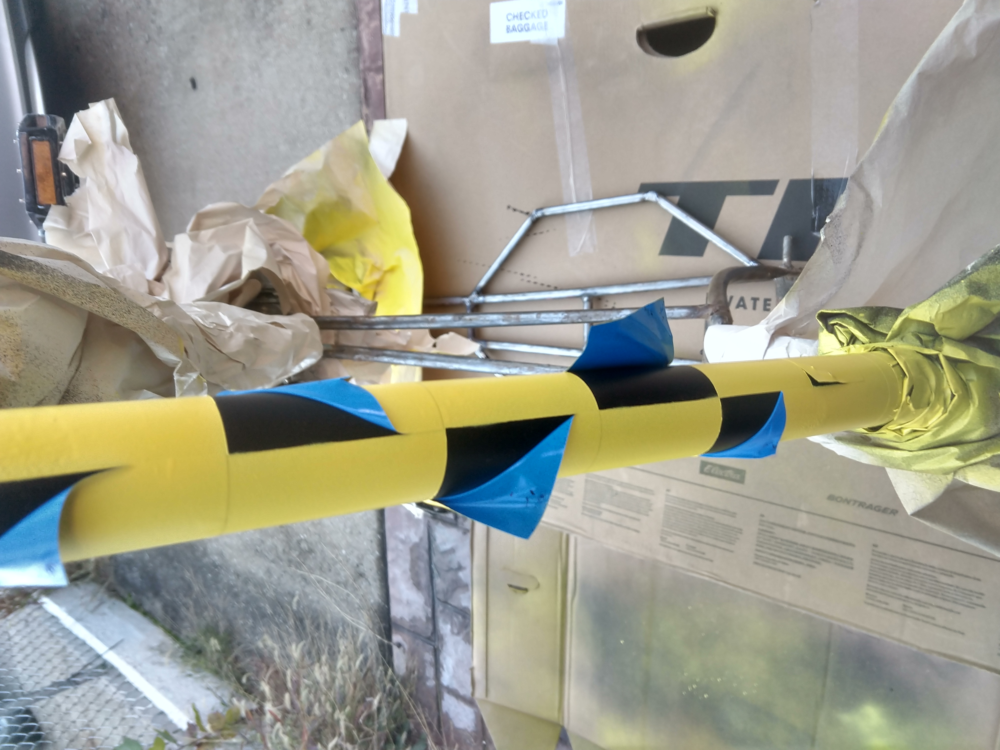
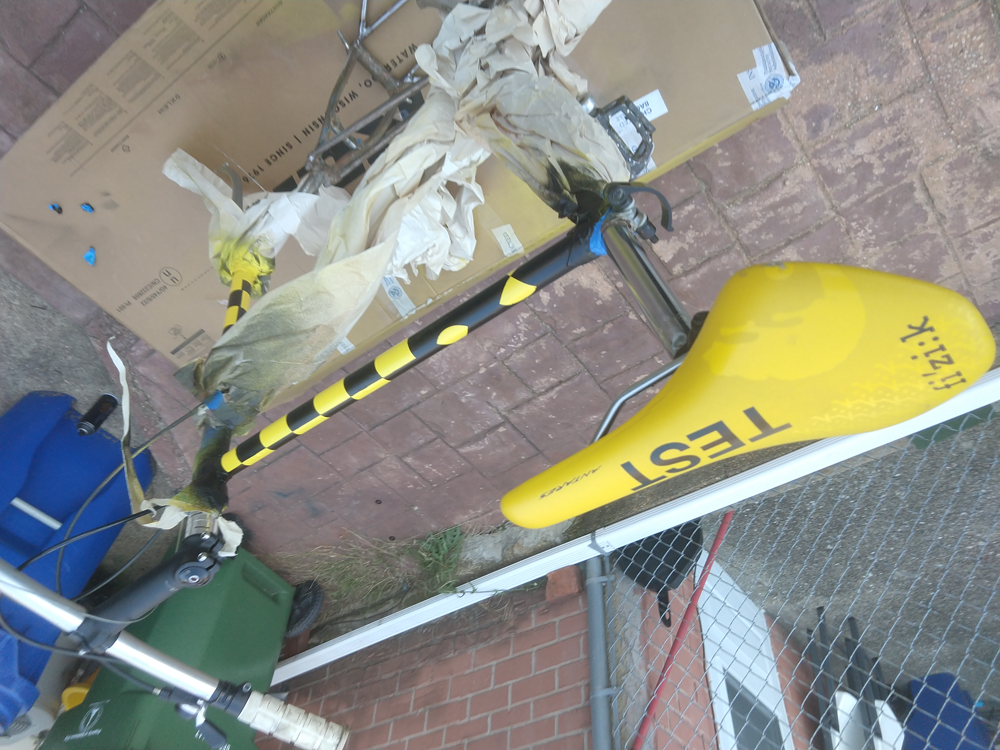
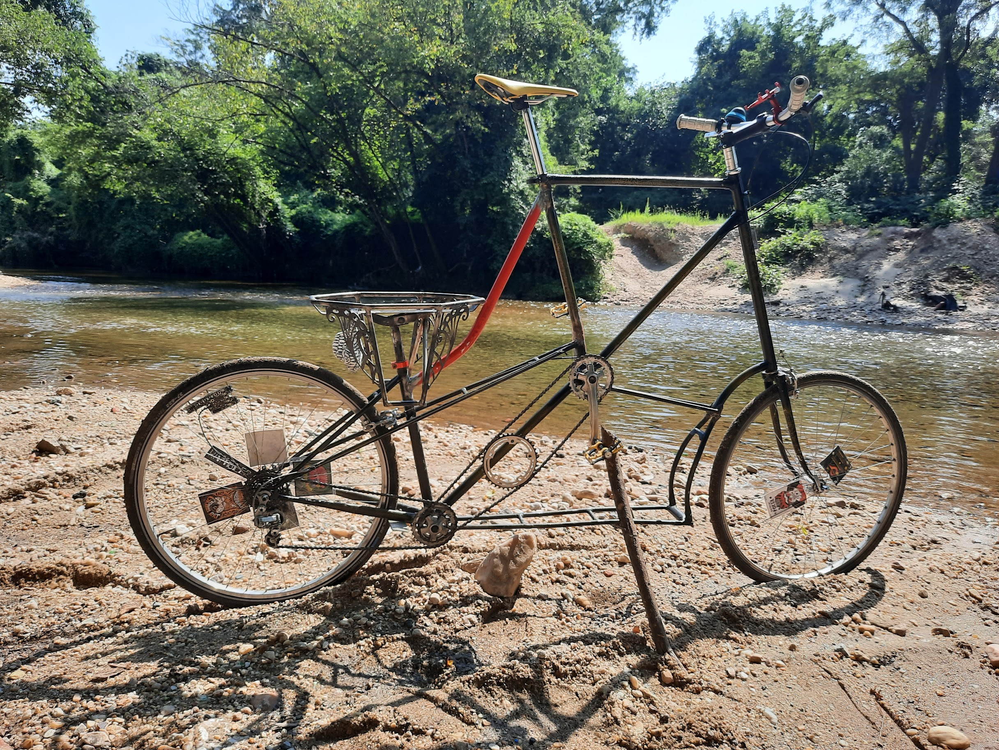
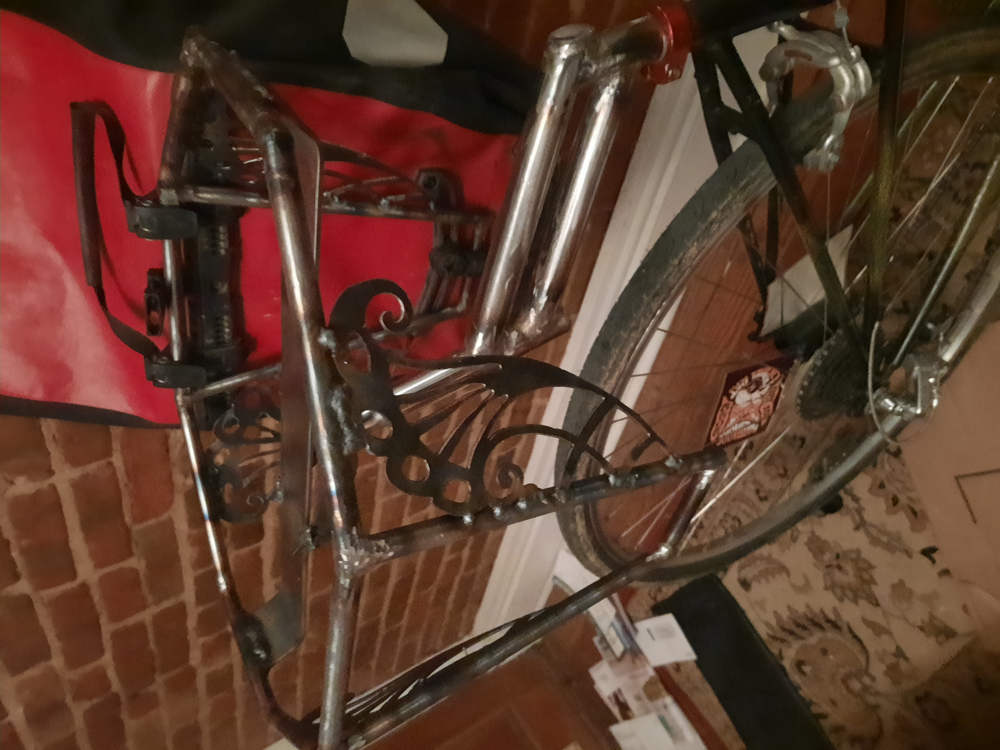
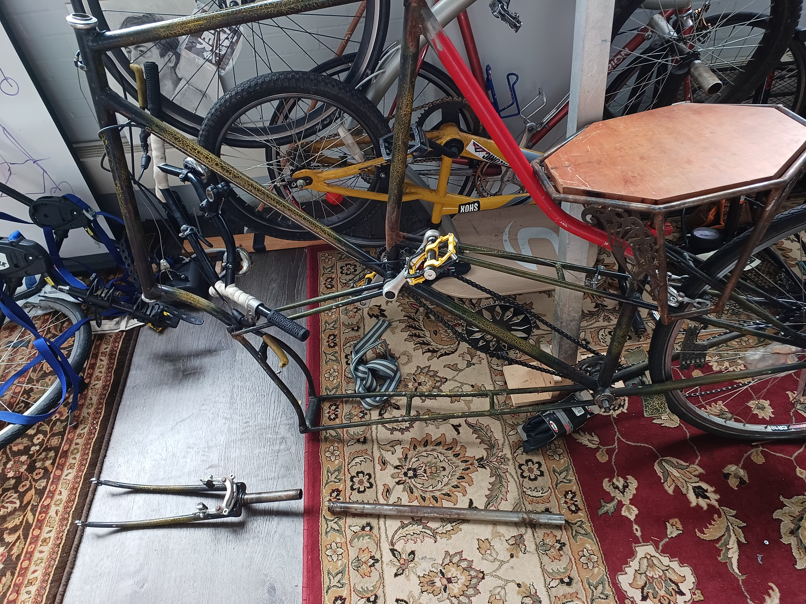
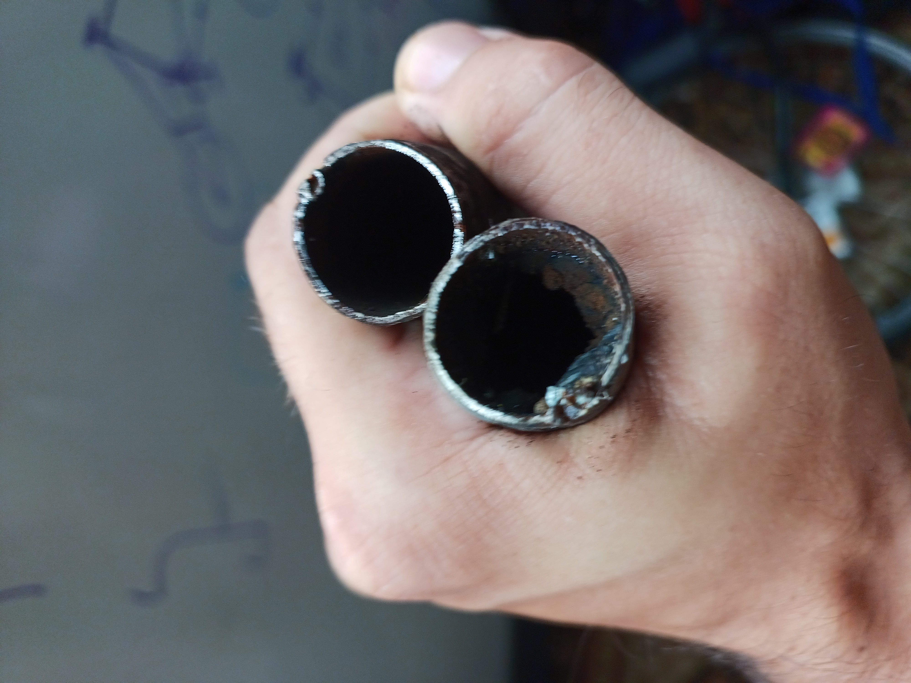
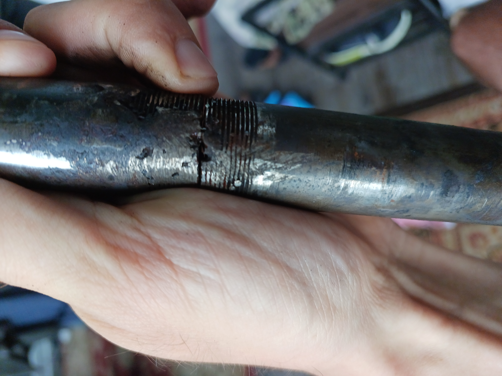

First Tall Bike

Tall Bike Beginings
My first exposure and interest in tall bikes was shortly after moving to Baltimore and meeting Brian, a good buddy who showed off his small talls, kids bikes zapped up in the same way. After pointing me towards the Zenga Brothers Tall Bikes Will Save the World I was hooked. Turns out all you need is a welder and angle grinder along with some steel frames. With his wise guidance, ample yard space, some extension cords and late night angle grinding I became a 2nd generation welder and a tall bike was born. Turns out eyeballing the alignment works just fine, but perhaps more thought should have come into how the tubes would be stressed.


Just in time delivery
I finished up the bike and got it just barely mechanically working in time for a trip down to Richmond for Burning Van, a big gathering of freak bike punks and it rode like a dream
I also had aspirations to set it up as a tandem, with the back sniffin farts of the tall rider. Didn't work out this trip as seat is too close and any pedals on the lower bottom bracket would strike the ground with any turn.


Frame problems
After about a year of riding this thing I suddenly heared a twang and felt a bit more wobbly while I was heading to a bar one night. Look down and the metal connnection of the rack to the headtube has come apart! And the top triangle definitely had a bend developing, which was twisting all the frame around due to the weight on the seat. I shored it up with the red fire alarm conduit pipe, salvaged from a dumpster in downtown baltimore


Another year, another weld failure
Another year of smooth riding and suddenly I'm remounting the bike in the middle of a 300 person mass at bike party but my handle bars go one way, wheel the other-- the fork extension failed. Luckily no injuries involved in diagnosing that.


